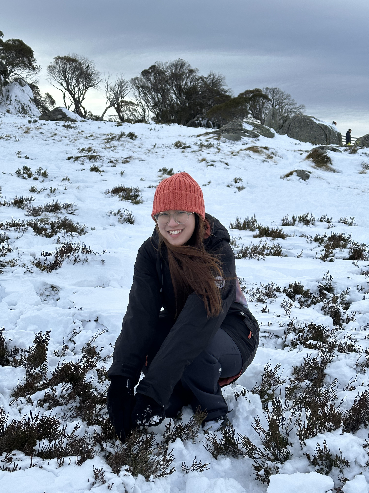

Hathaikan Wongkanha

Summary
Detail-oriented Cosmetic Scientist with 5 years of experience in research and development. Eager to provide innovative process and product development
Education
- Bachelor of Science, Cosmetic Science - Naresuan University
Work Experience
Work and Holiday in Australia
April 2023 - March 2024
Application development Specialist - Connell Bros. Company (Thailand) Limited
April 2020 - July 2022
Achivement
- Co-project with Dow Chemical Thailand (Fabric Softener/2022, Rheology Modifiers/2021)
- Arrange 1 webinar (2020), 3 webinar (2021) and 1 webinar (2022)
- 3 Road-show projects (Toiletries, Skincare, Haircare) which help to convince customer and won 2 projects
- E-newsletter per quater
- Product list for marketing sale tool
- Develop new prototype at least 70 products per year
Job description
- Provide tecnical infomation for customers
- Create and test formulation as customer's request
- Keep daily record and appropriate documentation on all laboratory work performed
- Manage stock of lab supplies as well as storage of sample prepared
- For webinar and Road-show, responsible for poster designing, protype preparing, prototype packaging
- Create and design webinar posterand protype packaging for webinar including Newsletter about trends and products
- Develop new prototype by using the listed ingredients for sale promoting
- Develop and analyze alternative raw materials for replacement projects
Other Skills
- Soap saponification
- Physical and chemical sunscreen agents blending
- Strong skill in toem management, prioritizeing task and meeting deadline
- Fluency in Thai (mother tongue), Intermidiate English
- Proficient with MS Word, Excel, Powerpoint and Adobe illustrator
Other
My hooooobbies
Contact me